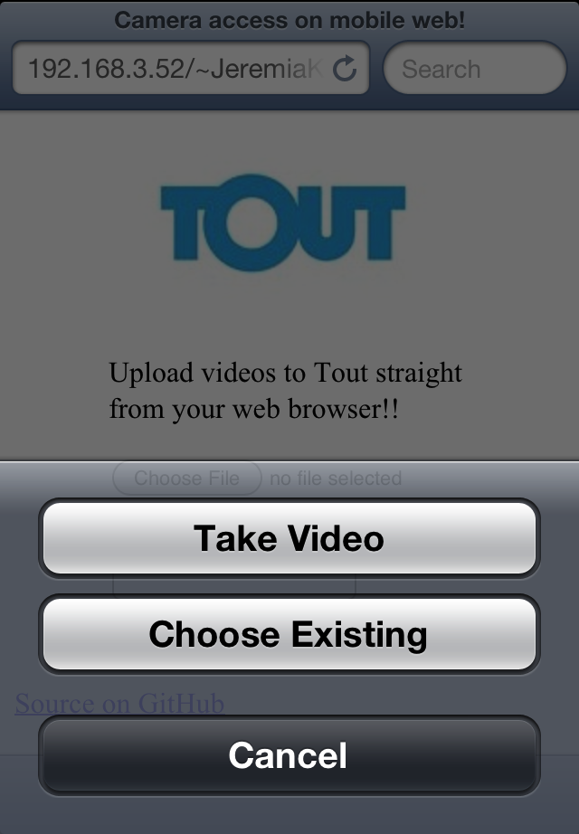

Finally, video conversations made easy.
http://developer.tout.com
Obvious first question is...

what is Tout?
You know what these folks do?
-

Short form social content
-
Video delivery for the masses

Imagine they created something wonderful together...
Tout is a platform for creating and sharing short form video content
Most people freak out after 16 seconds on camera, or so say the smart folks at S.R.I
Remember what we used to say about the 140 character thing?
Hey, video is easy. I can totally do that myself.
Do these look like your product's core strengths?
- Capture
- Transmission
- Encoding
- Storage
- Deliverability
- Playback
I didn't think so either. How about letting Tout handle that for you?
Let's try it!

Native SDKs for

Prebuilt Views
-

Video capture
-

Submission Screen
-
Queue & Connectivity
Authentication with OAuth 2.0
Camera manipulation
Connectivity
Tout Editing
Playback
Prizes for the best integration
$400 cold, hard cash
Ok, I'm in. Where do I go?
developer.tout.com
Who am I?

Matt Lanier -- matt@tout.com
@ToutPlatform
- Tout
- Twitter
- App.net
- GitHub
>